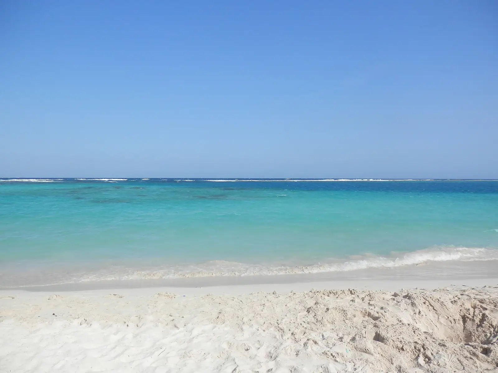

Destinos
Nacionales e internacionales: elija a dónde quiere ir y vea lo que tenemos allí.
Nacionales
Tucacas, FalcónCasas, apartamentos frente a la playa y habitaciones con desayuno, cerca de los muelles de salida a los cayos de Morrocoy.Chichiriviche, FalcónApartamentos frente al mar con muelle y una casa grande cerca del Golfete de Cuare y del Parque Nacional Morrocoy.Sanare, Morrocoy (Falcón)Villas y casas con piscina rodeadas de naturaleza, cerca de las playas de Morrocoy.Ciudad Flamingo, FalcónJunto al Refugio de Fauna Silvestre de Cuare y cerca de los embarcaderos hacia los cayos.PróximamenteIsla MargaritaMuy pronto tendremos un apartamento en Isla Margarita.
Dónde estamos
Toque un punto del mapa y vea lo que tenemos en esa zona.

¿Ya sabe a dónde quiere ir?
Díganos las fechas y cuántos son. Le respondemos por WhatsApp con las opciones disponibles.
Reservar por WhatsApp